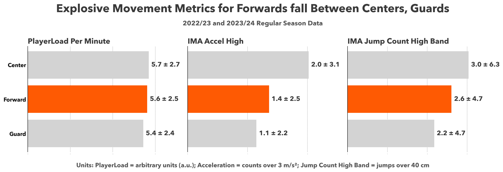

# Setting font
plt.rcParams['font.family'] = 'Avenir Next'
# Creating fig and axs, adding title, and subtext
fig, axs = plt.subplots(1, 3, figsize=(15, 5), sharey=True)
plt.suptitle('Explosive Movement Metrics for Forwards fall Between Centers, Guards', fontsize=24, weight='bold', color='#3a3a3a')
plt.figtext(0.5, 0.85, '2022/23 and 2023/24 Regular Season Data',
ha='center', fontsize=14, style='italic', color='#555555')
# Define metrics and names
metrics = ['PlayerLoad Per Minute', 'IMA Accel High(accel>3m/s/s)', 'IMA Jump Count High Band (jumps>40cm)']
metric_keys = ['Player Load Per Minute', 'IMA Accel High', 'IMA Jump Count High Band']
# Setting color to be orange for forwards, gray for all else
position_colors = {'Guard': '#d3d3d3', 'Forward': '#fe5a03', 'Center': '#d3d3d3'}
# Finding mean for position
summary_df = pd.DataFrame({
'Position': ['Guard', 'Forward', 'Center'],
'Player Load Per Minute': [guard_df['Player Load Per Minute'].mean(),
forward_df['Player Load Per Minute'].mean(), center_df['Player Load Per Minute'].mean()],
'IMA Accel High': [guard_df['IMA Accel High'].mean(),
forward_df['IMA Accel High'].mean(), center_df['IMA Accel High'].mean()],
'IMA Jump Count High Band': [guard_df['IMA Jump Count High Band'].mean(),
forward_df['IMA Jump Count High Band'].mean(), center_df['IMA Jump Count High Band'].mean()]})
# Calculating standard deviation for position to indicate error
error_df = pd.DataFrame({
'Position': ['Guard', 'Forward', 'Center'],
'Player Load Per Minute': [guard_df['Player Load Per Minute'].std(),
forward_df['Player Load Per Minute'].std(),
center_df['Player Load Per Minute'].std()],
'IMA Accel High': [guard_df['IMA Accel High'].std(),
forward_df['IMA Accel High'].std(),
center_df['IMA Accel High'].std()],
'IMA Jump Count High Band': [guard_df['IMA Jump Count High Band'].std(),
forward_df['IMA Jump Count High Band'].std(),
center_df['IMA Jump Count High Band'].std()]})
# Looping over both the metric title and key
for i, (metric_title, metric_key) in enumerate(zip(metrics, metric_keys)):
# Extracting position from summary dataframe
positions = summary_df['Position']
# Extracting mean for given metric
values = summary_df[metric_key]
# Plotting color for position(orange for forwards, gray otherwise)
colors = [position_colors[pos] for pos in positions]
# Extracting error
errors = error_df[metric_key].values
# Plotting the bar at the given axis
ax = axs[i]
bars = ax.barh(positions, values, color=colors, zorder=2)
# Get errors for current metric
current_errors = error_df[metric_key].values
# Adding value labels to each bar, error as well
for bar, value, error in zip(bars, values, current_errors):
# Round both value and error to one decimal place
formatted_value = f'{value:.1f} ± {error:.1f}'
# Offset from end of bar
ax.text(bar.get_width() + (ax.get_xlim()[1] * 0.02),
bar.get_y() + bar.get_height()/2,
formatted_value,
va='center',
size=14,
fontweight='bold',
color='#3a3a3a')
# Setting title as specified metric
ax.set_title(metric_title, loc='left', fontsize=16, weight='bold', color='#3a3a3a')
# Creating grid
ax.grid(axis='x', linestyle=':', color='gray', zorder=0)
# Removing spines
ax.spines[['top', 'right', 'bottom']].set_visible(False)
# Removing x-tick labels because we show values
ax.tick_params(axis='x', length=0, labelsize=0)
ax.tick_params(axis='y', length=0, labelsize=12, labelcolor='#111', width=0)
ax.locator_params(axis='x', nbins=4)
# Add a bit more space to the right of each plot to accommodate the value labels
x_max = max(values) * 1.15
ax.set_xlim(0, x_max)
# Adding text at the bottom to indicate the units used
plt.figtext(0.5, 0.01, 'Units: PlayerLoad = arbitrary units (a.u.); Acceleration = counts over 3 m/s²; Jump Count High Band = jumps over 40 cm',
ha='center', fontsize=13, style='italic', color='#555555')
plt.tight_layout()
# Adding room for title at the top, bottom for text
plt.subplots_adjust(top=0.725, bottom=0.1)
plt.show()